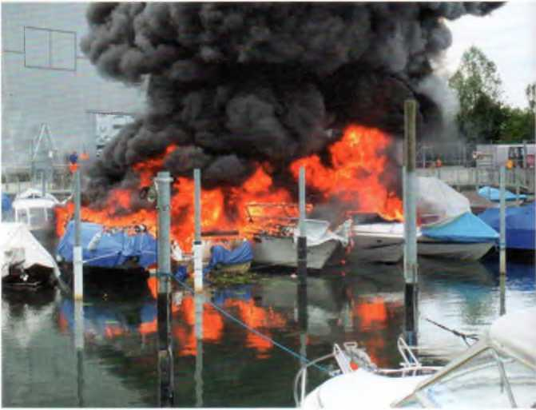
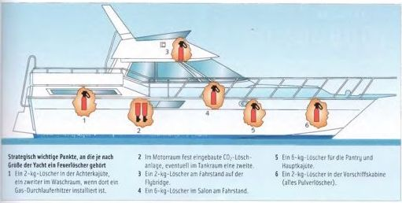

Ein Brand an Bord eines Motorbootes ist niemals vollständig auszuschließen. Deshalb müssen Feuerlöscher einsatzklar an Bord jedes Bootes sein. Ihre Anzahl hängt nicht so sehr von der Größe des Bootes ab, sondern mehr von der Feuergefährlichkeit der an Bord installierten Anlagen. In einem Außenborderboot mag ein 2-kg-Löscher in Reichweite des Fahrers als ausreichend gelten. Auf größeren Booten hingegen sind mehrere Feuerlöscher auf die strategisch wichtigen Plätze zu verteilen. Keinesfalls jedoch dürfen handbetriebene Feuerlöscher im Motorraum installiert werden, weil man sie dort bei einem Brand zu spät oder gar nicht mehr erreicht.
► Alle Feuerlöscher müssen vor Korrosion geschützt und regelmäßig, mindestens alle zwei Jahre, fachgerecht gewartet werden.
Bei Motoranlagen von etwa 150 PS (113 kW) an aufwärts empfiehlt sich eine fest installierte CO2-Feuerlöschanlage im Motorraum.
CO2-Löscher sind nur in einem frühen Stadium der Entstehung eines Brandes wirksam. CO2 greift in die chemische Reaktion des Verbrennungsprozesses ein und unterbricht sie. Es löscht weitgehend rückstandsfrei und dringt als Gas selbst zu verdeckten Brandherden vor.
Nachteil: Sammelt sich das Gas in Bilge oder engen schlecht belüfteten Räumen, besteht noch nach Stunden die Gefahr einer Kohlendioxidvergiftung.
ABC-Pulverlöscher (Yacht-Glutbrandpulverlöscher sind nicht für die Brandklasse D geeignet) arbeiten mit einem sogenannten antikatalytischen Effekt. Schwelbrände können nicht nachzünden.
Nachteil: Das abgelöschte Material wird nur abgekühlt. Es gast weiter. Deshalb sofort mit Wasser nachlöschen. Gelangt das Pulver in einen laufenden Motor, kann Totalschaden entstehen.
Nasslöscher werden von Yachtausrüstern nicht angeboten.
Schaumlöscher sind geeignet für die Brandklassen A und B. Der Schaum bildet eine geschlossene Oberfläche, die den Brandherd zusätzlich abkühlt und dadurch verhindert, dass das Feuer erneut auflodert.
| Amtliche Brandklasseneinteilung | A | B | C | D |
|---|---|---|---|---|
| Brände fester Stoffe, hauptsächlich organischer Natur, die normalerweise unter Glutbildung verbrennen, z. B. Holz, Papier, Stroh, Kohle, Textilien, Gummi | Brände von flüssigen oder flüssigwerdenden Stoffen, z. B. Benzin, Öle, Fette, Lacke, Harze, Wachse, Teer, Äther, Alkohol, Kunststoffe | Brände von Gasen, z. B. Methan, Propan, Wasserstoff, Acethylen, Stadtgas | Brände von Metallen, z. B. Lithium, Natrium, Kalium, Aluminium und deren Legierungen, Magnesium | |
| Glutbrandpulverlöscher | ✓ | ✓ | ✓ | |
| CO2-Löscher | ✓ | |||
| Schaumlöscher | ✓ | ✓ | ||
| Nasslöscher | ✓ |

Strategisch wichtige Punkte, an die je nach Größe der Yacht ein Feuerlöscher gehört
Kleinere Brände, etwa in der Pantry, lassen sich wohl am schnellsten mit einer Löschdecke aus feuerfester Folie ersticken, die es in verschiedenen Größen gibt.
► Vergaserbrände geht man ebenfalls am besten mit einer Löschdecke an, oder man packt eine nasse Decke um den Vergaser.
► Vor oder bei Beginn der Brandbekämpfung bitte unbedingt das Boot stoppen, denn Fahrtwind und Motor fördern, über die Ventilation, große Mengen Luft ins Boot und können alle Löschbemühungen vereiteln.
► Bei Kabelbränden mit dem Hauptschalter die Batterie vom Bordnetz trennen. Nach dem Ablöschen prüfen, in welchem Sicherungskreis es gebrannt hat, ihn separat stilllegen und den Hauptschalter wieder einschalten.
► Mit dem Löscher so dicht wie möglich an den Brandherd herangehen und den Strahl nicht in die Flammen, sondern auf die glühenden Teile richten. Den Brandherd, wenn möglich, kriechend angehen, denn unten sind keine Flammen, ist weniger Rauch, und entsprechend sind Sicht und Atemluft dort noch am besten.
► Beim Löschen mit dem Handlöscher im Maschinenraum den Lukendeckel oder Motorkasten nur so viel anheben, dass man mit dem Löscher gerade hineinhalten kann. Beim Öffnen den Kopf so weit wie möglich wegwenden, damit einem die Flamme nicht ins Gesicht schießt. Bei neueren Booten ist eine Feuerlöschöffnung in der Motorraumabdeckung gängige Praxis.
► Schaumstoffpolster müssen nach dem Ablöschen sofort über Bord geworfen werden, weil sie weiterschwelen. Glasharz-Brände sind nur im frühen Anfangsstadium mit dem Feuerlöscher zu bekämpfen.